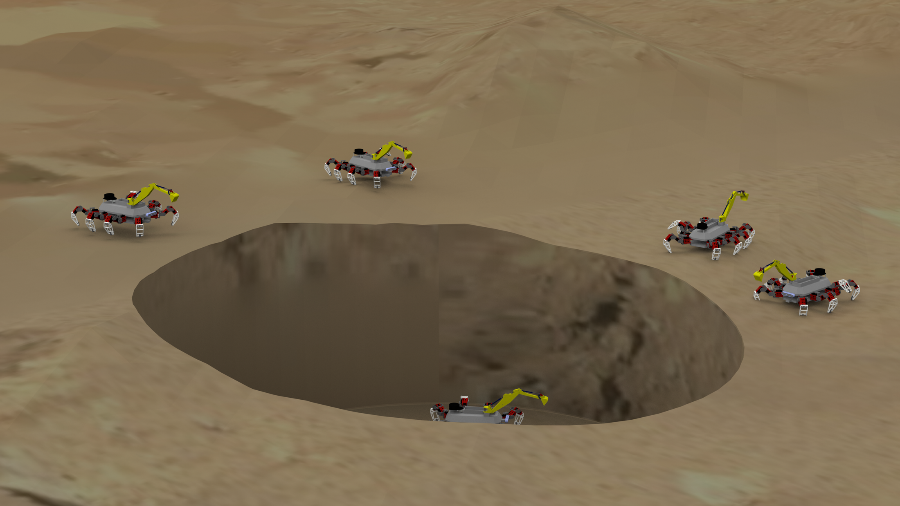

Role
Independent capstone project by Michael Dattolo, with faculty mentorship.
CAPSTONE · ROBOTICS CONCEPT + PHYSICAL PROTOTYPE
My 2024 Johnson & Wales capstone explored a robotic approach to assessing terrain and supporting underground habitat construction on Mars.
Independent capstone project by Michael Dattolo, with faculty mentorship.
Concept development plus a constructed prototype used to demonstrate sensing and mobility ideas.
Technology & Innovation recognition at the 2024 JWU Student Research, Design & Innovation Symposium.
THE PROBLEM
The project focused on reducing direct astronaut involvement in early habitat construction by proposing a robot that could assess terrain and support excavation/construction tasks using local material.
MY CONTRIBUTION
I developed the capstone concept and physical prototype. JWU’s published coverage documents LiDAR and an Intel depth-sensing camera used for site-assessment functions. The exact final leg configuration conflicts across older portfolio copy and university coverage, so this page avoids repeating an unverified leg count.
EVIDENCE

Visual development of the robot architecture and construction workflow.

Presentation material showing the project concept and intended workflow.

Illustration of one stage in the proposed construction sequence; this should be read as a design proposal, not a field-tested Mars process.
OUTCOME / LIMITATIONS
The project was presented publicly at JWU and received Technology & Innovation recognition. Older site copy described full ROS 2/Gazebo validation, topology-optimized structures and end-to-end autonomous performance; those claims are omitted here until project files can substantiate them.